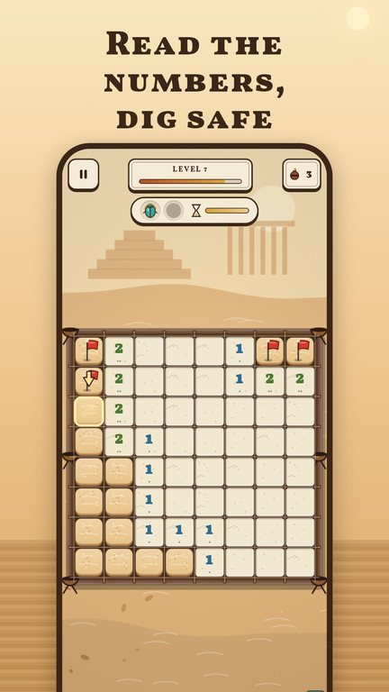
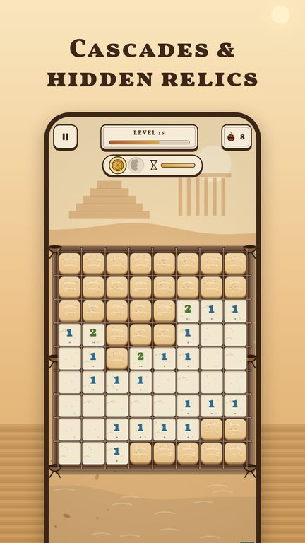
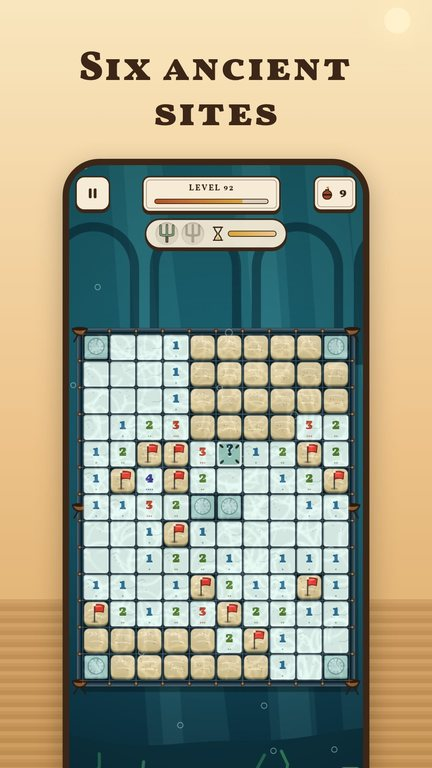
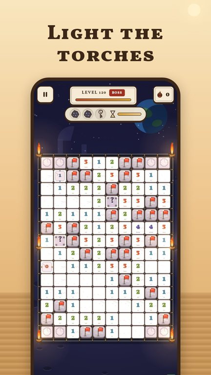

Minesweeper
No-guess logic excavations




Brush away the sand. Read the numbers. Never guess.
Minesweeper: Ancient Dig is the classic logic puzzle reimagined as an archaeological excavation. Sand-covered tiles hide old clay pot-mines. Every number carved into the stone floor tells you how many mines touch that tile. Pin the mines with little red survey flags, clear every safe tile and light the torches around the site.
Why you'll keep playing
- No guessing, ever: every board is checked by a logic solver, so it can always be finished by pure deduction from the marked starting stake
- Tap to dig, long-press or switch to Pin to flag, tap a number to clear around it
- Cascades ripple through the sand with rising notes and drifting dust
- Relics glint under the sand: dig them out before the hourglass runs out to earn the third star
- Collect 18 relics, from sun coins and jade idols to meteor shards, in your own gallery
- Level after level of slowly rising challenge, with a bigger boss dig at the end of every chapter
- New twists as you travel: veiled glyphs that hide their number, row and column tablets, and pillars that reshape the site
- Six ancient sites: Desert Temple, Jungle Ziggurat, Ice Cavern, Volcano Forge, Sunken City and Moon Ruins
- Classic mode with Easy, Medium and Hard boards and your best times
- A hint always points to a tile that is logically safe
Fair by design
- No ads at all in the first 25 levels
- After that, an occasional ad between levels, never during play
- Watching a video to continue or to skip a hard level is always optional
- One optional purchase removes the between-level ads for good
- No currencies, no loot boxes, no subscriptions
Play anywhere
- Works offline, no account needed
- Available in 14 languages